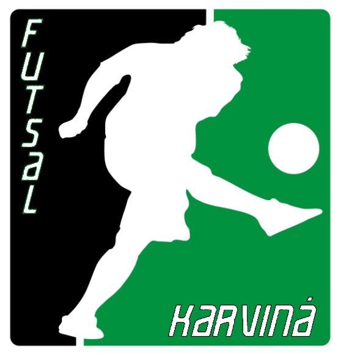
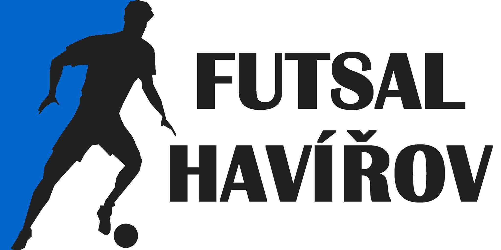
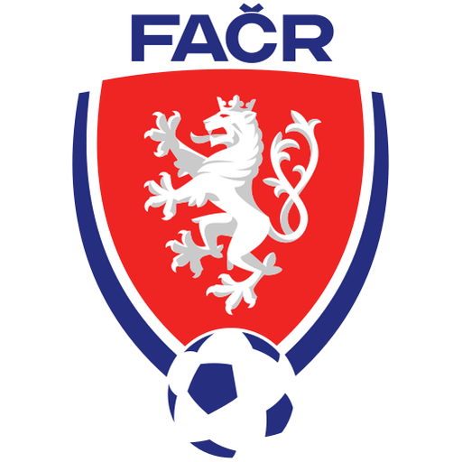

13.místo
Klub napříč regionem
Tři města.
Jeden Invictus.
Výsledky, sezonní bilance a dohledatelné statistiky ze soutěží, kterými klub během své historie prošel.

Karviná
Karvinská
futsalová liga
Otevřít statistiky →
02

Domácí půda
Havířovská
futsalová liga
Otevřít statistiky →
03

Ostrava a Opava
Ostravská
futsalová liga
Otevřít statistiky →
Poslední dokončený ročník
Sezona 2025/26 v číslech
13.místo